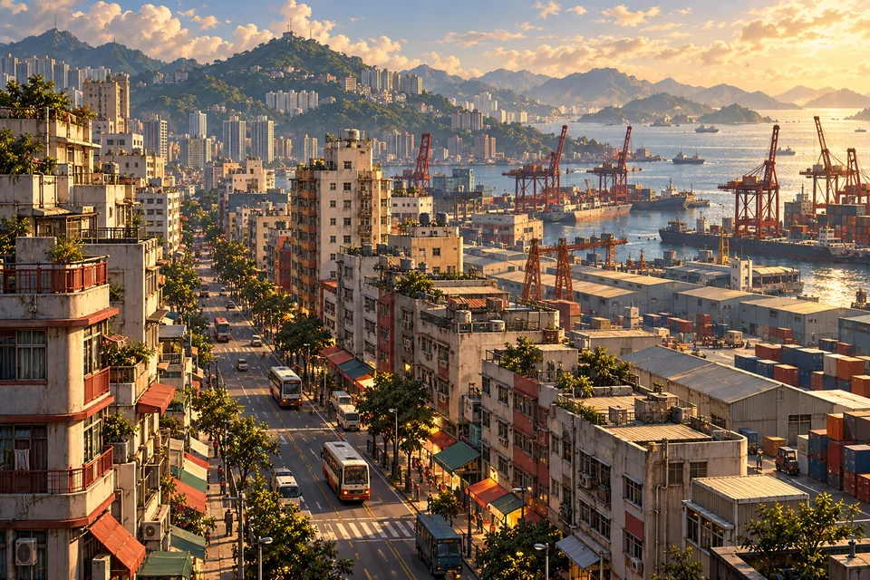

香城島
HONG SHING ISLAND城市金融、文化與旅遊核心。北岸商業天際線與南部山海景觀並存。
香城是《龍爭虎鬥 Dragon Affairs》的核心舞台。繁密的商業中心、公共屋邨、港口物流、國際機場、金融市場與日常街道，共同構成一座有自己運作邏輯的都市。
城市金融、文化與旅遊核心。北岸商業天際線與南部山海景觀並存。

工商、住宅與物流腹地。大沙灣、海涌與菜田構成香城最具生活密度的城市帶。
航空、旅遊與宗教門戶，香城國際機場坐落於此，並以海涌大橋連接中島。
地區配圖為 AI 生成的世界觀概念視覺，非遊戲實機畫面；建築與地理細節不代表最終設定。
鐵路、電車、巴士、公路、跨海大橋、港口與航空網絡將三座主要島嶼連成一個完整都市系統。